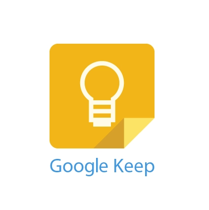
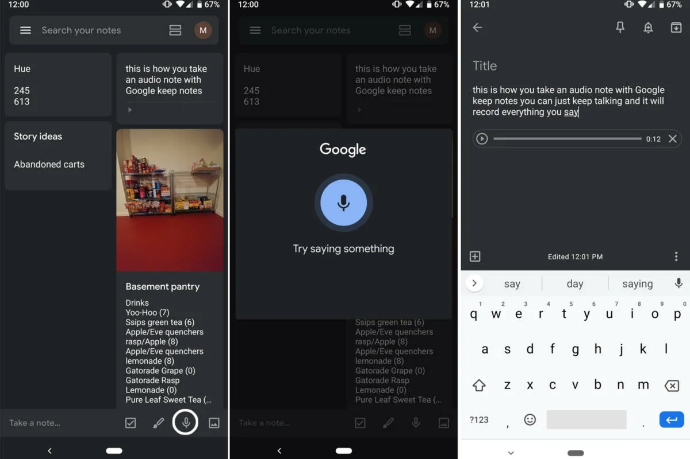

_____________________________________________________________________________________________________________
Это приложение для создания и хранения заметок можно использовать как расшифровщик.
Если на главном экране нажать на иконку микрофона и начать говорить, то сервис будет переводить звук в текст — это называется транскрибацией. Загрузить и расшифровать аудиофайл не получится.
У сервиса есть еще один минус: запись останавливается, если молчать две-три секунды, поэтому расшифровывать длинные интервью не получится. Разве что делать это небольшими кусками. Наговорить несколько идей и получить их в блокноте получится отлично.

Логотип Google Keep

Пример работы в Google Keep
Главные преимущества Google Keep:
Главные недостатки Google Keep:
A подробное описание данной программы и как ею пользоваться можно узнать по ссылке, а также в видео ниже:
Как пользоваться программой Google Keep